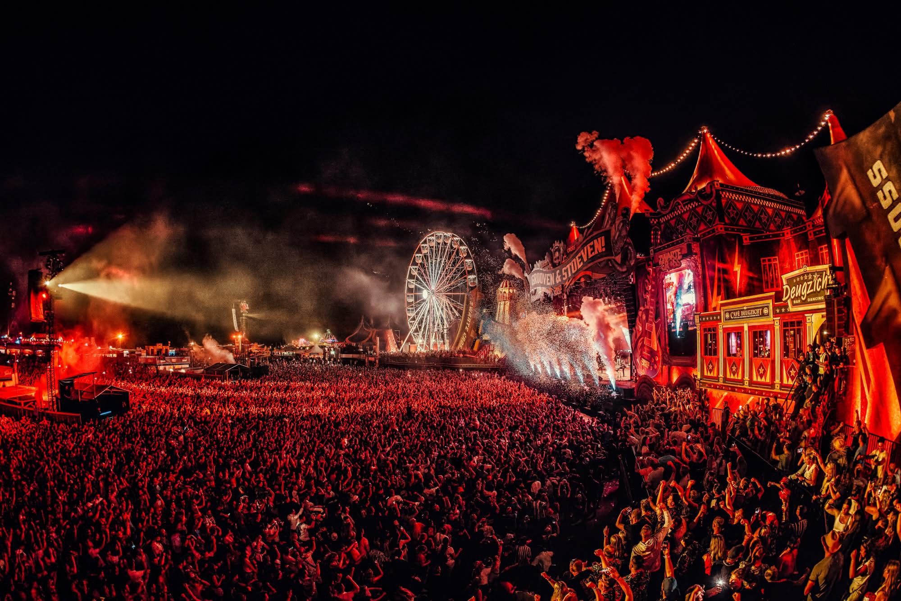
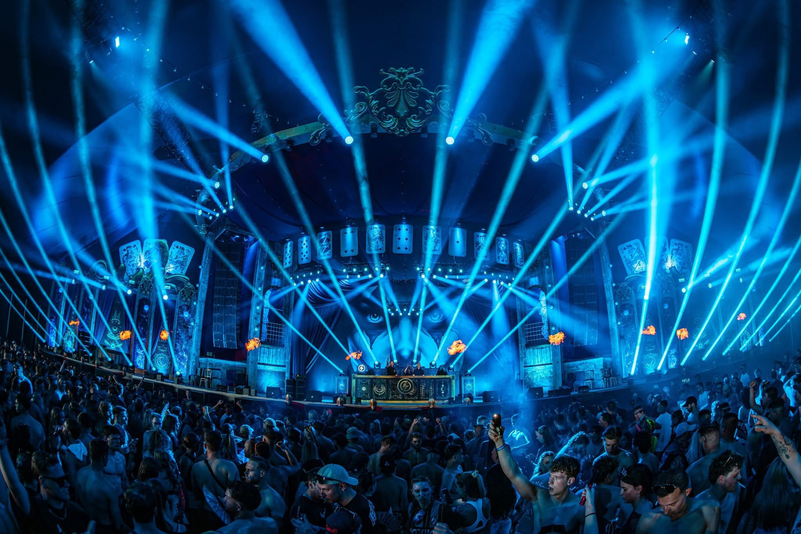
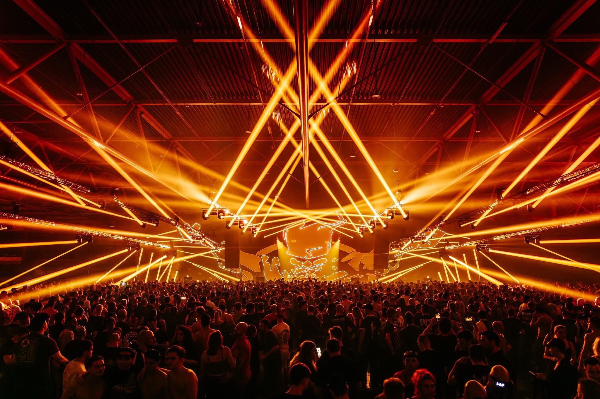

01
Festival support
Grote bezoekersstromen, strakke schema's en snelle turnovers. Ik houd overzicht en tempo.

Betrouwbare crew en allround support voor festivals, tours en clubshows. Ik ben de extra laag rust die jouw productie sneller laat draaien.
Focus
Flow, tempo en crew-cohesie.
Ik sluit aan op jouw team, jouw tempo en jouw workflow. Korte lijnen, duidelijkheid en altijd focus op het eindresultaat.
Van load-in tot showcall: ik zorg dat crew, artiest en techniek soepel door kunnen. Rustig, snel en oplossingsgericht.

01
Grote bezoekersstromen, strakke schema's en snelle turnovers. Ik houd overzicht en tempo.
02
Backline, stage, hospitality of runner? Ik pak het op en zet het af zoals het hoort.
03
Extra handen en ogen voor planning, onboarding van crew en het oplossen van last-minute knelpunten.
Werkstijl
Rustig in chaos. Ik vertaal last-minute input naar duidelijke actie.
Tools
Walkies, crew flow, logistics en hospitality afgestemd per productie.
Ik werkte o.a. op festivals als Thunderdome, Intents en Defqon.1 en met artiesten als Van Velzen, Miss Montreal en Maan.
Festivals
Artiesten

Op locatie
Altijd één stap vooruit denken zodat artiesten, crew en techniek zonder ruis kunnen presteren.
Contact
Stuur je datum, locatie en type productie. Ik laat snel weten of ik beschikbaar ben.
Of bel/WhatsApp: +31 6 0000 0000
Mail voor een boeking